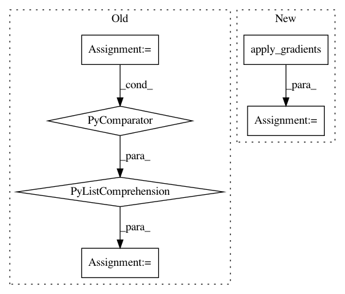

1e339c1a0a186da155c9dc2ab8798075d248dc3e,hypergan/optimizers/curl_optimizer.py,CurlOptimizer,apply_gradients,#CurlOptimizer#Any#Any#Any#,44
Before Change
with tf.get_default_graph().control_dependencies([op1, op2]):
// store g2
//op3 = self.optimizer.apply_gradients(list(grads_and_vars).copy(), global_step=global_step, name=name)
op3 = tf.group(*[tf.assign_sub(v, self._lr_t*grad) for grad,v in grads_and_vars])
with tf.get_default_graph().control_dependencies([op3]):
def curlcombine(g1,g2,_v1,_v2):
J = (g2-g1)/((_v2-_v1)+1e-8)
After Change
with tf.get_default_graph().control_dependencies([op1, op2]):
// store g2
op3 = self.optimizer.apply_gradients(list(grads_and_vars).copy(), global_step=global_step, name=name)
//op3 = tf.group(*[tf.assign_sub(v, self._lr_t*grad) for grad,v in grads_and_vars])
with tf.get_default_graph().control_dependencies([op3]):
def curlcombine(g1,g2,_v1,_v2):
In pattern: SUPERPATTERN
Frequency: 3
Non-data size: 6
Instances
Project Name: HyperGAN/HyperGAN
Commit Name: 1e339c1a0a186da155c9dc2ab8798075d248dc3e
Time: 2018-11-06
Author: mikkel@255bits.com
File Name: hypergan/optimizers/curl_optimizer.py
Class Name: CurlOptimizer
Method Name: apply_gradients
Project Name: HyperGAN/HyperGAN
Commit Name: f633f14e56c45a5027201de9a31d995b44b7c147
Time: 2018-06-11
Author: martyn@255bits.com
File Name: hypergan/trainers/consensus_trainer.py
Class Name: ConsensusTrainer
Method Name: _create
Project Name: arnomoonens/yarll
Commit Name: 8fa3ead04fb9c3d25e968fceee14c7a0450f786c
Time: 2017-05-13
Author: x-006@hotmail.com
File Name: agents/async_knowledge_transfer.py
Class Name: AsyncKnowledgeTransfer
Method Name: __init__